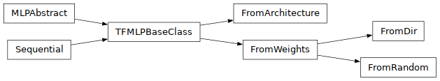

Perceptrons¶
Abstract Multilayer Perceptrons¶
- class perceptrons.abstract.MLPAbstract(*args, **kwargs)¶
Bases:
ProtocolThe Base Class for Multilayered Perceptrons. This class models a specific class of NN of the form:
[Flatten, input_shpae], [Dense, ReLU, dim_0], [Dense, ReLU, dim_1], ... [Dense, ReLU, dim_(L-1)]
This defines a L-layered MLP of the form
Z:IR^(dim_0) --> IR^(d_(L-1)).Data Members:
architecture: List[int], a list containing the dimensions of each layer.num_layers: int, the number of layers.input_shape: Tuple[int], the shape on the inputs before flattening.out_dim: int, the output dimension.W: List[ndarray], the list of weights.b: List[ndarray], the list of biases. Naturally.X_train, X_test: ndarray, the training datapoints.
Invariants:
architecture = [dim_0, dim_1, ..., dim_(L-1)]num_layers == len(architecture)out_dim == architecture[-1]len(W) == len(b) == len(architecture)X_tain.shape == (n, input_shape), wherenis the number of training samples.X_test.shape == (m, input_shape), wherenis the number of test samples.Y_train.shape == (n,)andY_test.shape == (m,).
Notes:
All the above data members should be properly initialized before the use of the provided methods. Otherwise, the methods behavior is unkown.
Methods¶
- __init__(*args, **kwargs)¶
- adhoc_loss(X: ndarray | None = None, Y: ndarray | None = None, verbose: int = 0) float¶
Dimensions:
n, the number of samples.in_dim, the MLP’s input dimention (shape)
Inputs:
X, tensor with shape(n, in_dim).Y,tensor with shape(n,).
Yshould be a vector of the integer labels.Outputs:
The loss measured on the given input.
- adhoc_accuracy(X: ndarray | None = None, Y: ndarray | None = None, verbose: int = 0) float¶
Dimensions:
n, the number of samples.in_dim, the MLP’s input dimention (shape)
Inputs:
X, tensor with shape(n, in_dim).Y,tensor with shape(n,).
Yshould be a vector of the integer labels.Outputs:
The accuracy measured on the given input.
- predict(X: ndarray) ndarray¶
Dimensions:
n, the number of samples.in_dim, the MLP’s input dimention (shape)
Inputs:
X, tensor with shape(n, in_dim).Y,tensor with shape(n,).
Yshould be a vector of the integer labels.
- scores(X: ndarray) ndarray¶
Dimensions:
n, the number of samples.in_dim, the MLP’s input dimention (shape)out_dimis the MLP’s output dimention (shape)
Inputs:
X, tensor with shape(n, in_dim).Y,tensor with shape(n,).
Yshould be a vector of the integer labels.Outputs:
S, a tensor with shape(n, out_dim).
- report() None¶
Extensive report to stdout.
- report2file(filepath: str | None = None, overwrite: bool = True) None¶
Extensive report to file.
- export2onnx(onnx_path: str | None = None, overwrite: bool = False) None¶
Export the MLP as Open Neural Network eXchange (ONNX) format.
Input:
onnx_path: str, the path to save the.onnxfile.The path must have the suffix
.onnx.Default value is
None.
overwrite: bool, overwrites the.onnxeven if exists.Default value is
False.
Behavior:
If
onnx_path != None, then the exported file is saved to the given path.Otherwise, the exported file is saved to the path
./<self.name>/<self.name>.onnx.
- get_weights() Tuple[ndarray, ndarray]¶
Returning a tuple of the form
(Ws, bs), where:Ws = [W_0, W_1, ..., W_L]is a list of the weight matrices, andW_iis the weights of the i-th layer.bs = [b_0, b_1, ..., b_L]is a list of the bias vectors, andb_iis the bias of the i-th layer.
Notes:
The returned np.ndarrays are a deep copy of the originals. Namely, when modifying the returned matrices, this does not entail a modification of the MLP’s weights.
- set_weights(Weights: ndarray, biases: ndarray)¶
Setting the weight and biases of the network, w.r.t. the given values.
- export2csv(csv_dir: str | None = None, overwrite: bool = False, delim: str = ' ') None¶
Exports the networks weights as simple .csv files, in the designated directory. The files follow the format bellow:
W_<layer>.csv, for the weight matrices.b_<layer>.csv, for the bias vectors.
Inputs:
csv_dir: str, the directory to save the csvs.If the the directory doe not exists, it will be created.
Default value:
None.
overwrite: bool, overwrite existing files.If set to true all the parameter files, of the form
<W|b>_<number>.csvwill be erased.Default value:
False.
delim: str, the delimeter to be used in the csvs.Default value:
default_delim, the latter constant is set to a single space.
Naming Convention:
The
<layer>id will be always of lengthlog(num_layers).E.g., for a MLP of
10layers and the 3rd weight matrix, we will haveW_03.csv.
If
csv_dir == None, then the csvs will be located under./<self.name>/.It also supports directory hierarchy. If
csv_diris of the form./<dir1>/<dir2>/ ... /<dirn>all the indermediate dirs will be created.
- export2npz(filename: str | None = None, overwrite: bool = False) None¶
Convert to
.npzformat, a compresed collection of.npyfiles..npyare binaries, supported by NumPy to store and retrieve matrices. There, we store the weight and bias matrices.
- __subclasshook__()¶
Abstract classes can override this to customize issubclass().
This is invoked early on by abc.ABCMeta.__subclasscheck__(). It should return True, False or NotImplemented. If it returns NotImplemented, the normal algorithm is used. Otherwise, it overrides the normal algorithm (and the outcome is cached).
- __weakref__¶
list of weak references to the object (if defined)
TensorFlow Implementation¶

- class perceptrons.tfmultilayer.TFMLPBaseClass(name: str = 'multilayered-perceptron', activation=True)¶
Bases:
MLPAbstract,Sequential- __init__(name: str = 'multilayered-perceptron', activation=True)¶
- adhoc_loss(X: ndarray | None = None, Y: ndarray | None = None, verbose: int = 0) float¶
Dimensions:
n, the number of samples.in_dim, the MLP’s input dimention (shape)
Inputs:
X, tensor with shape(n, in_dim).Y,tensor with shape(n,).
Yshould be a vector of the integer labels.Outputs:
The loss measured on the given input.
- predict(X: ndarray) ndarray¶
Dimensions:
n, the number of samples.in_dim, the MLP’s input dimention (shape)
Inputs:
X, tensor with shape(n, in_dim).Y,tensor with shape(n,).
Yshould be a vector of the integer labels.
- scores(X: ndarray) ndarray¶
Dimensions:
n, the number of samples.in_dim, the MLP’s input dimention (shape)out_dimis the MLP’s output dimention (shape)
Inputs:
X, tensor with shape(n, in_dim).Y,tensor with shape(n,).
Yshould be a vector of the integer labels.Outputs:
S, a tensor with shape(n, out_dim).
- __str__() str¶
Return str(self).
- report() None¶
Extensive report to stdout.
- report2file(filepath: str | None = None, overwrite: bool = True) None¶
Extensive report to file.
- export2onnx(onnx_path: str | None = None, overwrite: bool = False) None¶
A wrapper of tf2onnx.convert.from_keras(), see here.
- export2csv(csv_dir: str | None = None, overwrite: bool = False, delim: str = ' ') None¶
Exports the networks weights as simple .csv files, in the designated directory. The files follow the format bellow:
W_<layer>.csv, for the weight matrices.b_<layer>.csv, for the bias vectors.
Inputs:
csv_dir: str, the directory to save the csvs.If the the directory doe not exists, it will be created.
Default value:
None.
overwrite: bool, overwrite existing files.If set to true all the parameter files, of the form
<W|b>_<number>.csvwill be erased.Default value:
False.
delim: str, the delimeter to be used in the csvs.Default value:
default_delim, the latter constant is set to a single space.
Naming Convention:
The
<layer>id will be always of lengthlog(num_layers).E.g., for a MLP of
10layers and the 3rd weight matrix, we will haveW_03.csv.
If
csv_dir == None, then the csvs will be located under./<self.name>/.It also supports directory hierarchy. If
csv_diris of the form./<dir1>/<dir2>/ ... /<dirn>all the indermediate dirs will be created.
- set_weights(Weights: ndarray, biases: ndarray)¶
Setting the weight and biases of the network, w.r.t. the given values.
- build()¶
Builds the model based on input shapes received.
This is to be used for subclassed models, which do not know at instantiation time what their inputs look like.
This method only exists for users who want to call model.build() in a standalone way (as a substitute for calling the model on real data to build it). It will never be called by the framework (and thus it will never throw unexpected errors in an unrelated workflow).
- Args:
- input_shape: Single tuple, TensorShape, or list/dict of shapes, where
shapes are tuples, integers, or TensorShapes.
- Raises:
- ValueError:
In case of invalid user-provided data (not of type tuple, list, TensorShape, or dict).
If the model requires call arguments that are agnostic to the input shapes (positional or kwarg in call signature).
If not all layers were properly built.
If float type inputs are not supported within the layers.
In each of these cases, the user should build their model by calling it on real tensor data.
- propagate_bounds(domain: Interval) Tuple[List[Interval], List[Interval]]¶
The simple bound propagation algorithm, appeared in: [Li et al., (IEEE TDSC 2022)], [Liu et al., (ICML 2019)] and [Gowal et al., (2018)]
- __subclasshook__()¶
Abstract classes can override this to customize issubclass().
This is invoked early on by abc.ABCMeta.__subclasscheck__(). It should return True, False or NotImplemented. If it returns NotImplemented, the normal algorithm is used. Otherwise, it overrides the normal algorithm (and the outcome is cached).
- class perceptrons.tfmultilayer.FromArchitecture(architecture: List[int], input_shape: Tuple[int], name: str = 'multilayered-perceptron', activation: bool = True)¶
Bases:
TFMLPBaseClass- __init__(architecture: List[int], input_shape: Tuple[int], name: str = 'multilayered-perceptron', activation: bool = True)¶
Initialize a MLP using architecture parameters, i.e.
architecture: List[int], a list of dimentions.input_shape: Tuple[int], the shape on the inputs before flattening.name: str, the name of the MLP.Default Value:
multilayered-perceptron.
activation: bool, a flag to either enable or disable thereluactivations.Default Value:
True.
- __subclasshook__()¶
Abstract classes can override this to customize issubclass().
This is invoked early on by abc.ABCMeta.__subclasscheck__(). It should return True, False or NotImplemented. If it returns NotImplemented, the normal algorithm is used. Otherwise, it overrides the normal algorithm (and the outcome is cached).
- class perceptrons.tfmultilayer.FromWeights(Weights: List[ndarray], biases: List[ndarray], input_shape: Tuple[int], name: str = 'multilayered-perceptron', activation: bool = True)¶
Bases:
TFMLPBaseClass- __init__(Weights: List[ndarray], biases: List[ndarray], input_shape: Tuple[int], name: str = 'multilayered-perceptron', activation: bool = True)¶
Initialize a MLP from a list of weights and biases.
Inputs:
Weights: List[np.ndarray], a list of weights.biases: List[np.ndarray], a list of biases.input_shape: Tuple[int], the shape on the inputs before flattening.name: str, the name of the MLP.Default Value: multilayered-perceptron.
activation: bool, a flag to either enable or disable thereluactivations.Default Value:
True.
- __subclasshook__()¶
Abstract classes can override this to customize issubclass().
This is invoked early on by abc.ABCMeta.__subclasscheck__(). It should return True, False or NotImplemented. If it returns NotImplemented, the normal algorithm is used. Otherwise, it overrides the normal algorithm (and the outcome is cached).
- class perceptrons.tfmultilayer.FromDir(dir_path: str, input_shape: Tuple[int], delim: str = ' ', activation: bool = True)¶
Bases:
FromWeights- __init__(dir_path: str, input_shape: Tuple[int], delim: str = ' ', activation: bool = True)¶
Initialize a MLP from a dir of csv files:
Inputs:
dir_path: str, the path to the diractory.input_shape: Tuple[int], the shape on the inputs before flattening.delim: str, the delimiter for the.csvfiles.activation: bool, a flag to either enable or disable thereluactivations.Default Value:
True.
- __subclasshook__()¶
Abstract classes can override this to customize issubclass().
This is invoked early on by abc.ABCMeta.__subclasscheck__(). It should return True, False or NotImplemented. If it returns NotImplemented, the normal algorithm is used. Otherwise, it overrides the normal algorithm (and the outcome is cached).
- class perceptrons.tfmultilayer.FromRandom(architecture: List[int], input_shape: Tuple[int], seed: int = 0, name: str = 'multilayered-perceptron', activation: bool = True)¶
Bases:
FromWeights- __init__(architecture: List[int], input_shape: Tuple[int], seed: int = 0, name: str = 'multilayered-perceptron', activation: bool = True)¶
Creating a MLP from random weight matrices.
Inputs:
architecture: List[int], a list of each layer output dimensions.input_shape: Tuple[int], the input shape.seed: int, the seed for the random number generator.Default Value:
seed = 0.
name: str, the name of the MLP.Default Value:
name = "multilayered-perceptron".
activation: bool, a flag to either enable or disable thereluactivations.Default Value:
True.
Notes:
The weights and biases take values in
[-1, 1], w.r.t. their shape.
- __subclasshook__()¶
Abstract classes can override this to customize issubclass().
This is invoked early on by abc.ABCMeta.__subclasscheck__(). It should return True, False or NotImplemented. If it returns NotImplemented, the normal algorithm is used. Otherwise, it overrides the normal algorithm (and the outcome is cached).